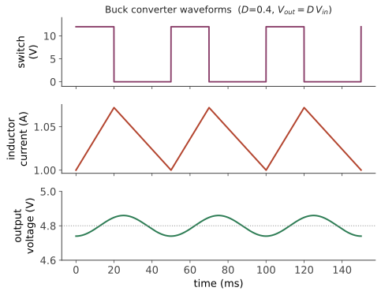

实务 I · 电力电子与变换器
层次：本科核心（自动化/电气必修）+ 业界主要就业方向 ｜ 🔗 与微电子站功率器件、生物站能量代谢遥相呼应。 控制器算出的"控制量"最终必须变成真实的电流与电压。电力电子就是这个转换环节：它以极高的效率调节电能的形态。本页讲清它的核心思想——用开关而非线性调节——以及由此带来的一切优点与麻烦。
一、核心思想：为什么必须用开关
要把 12 V 降到 5 V，最简单的办法是串一个电阻分压（线性调节）。问题在于效率：
多余的能量全部变成热。要输出 10 A，就要烧掉 70 W——不可接受。
开关调节的思想：用一个理想开关以高频通断，再用电感电容滤波得到平均值。
关键在于：理想开关不耗散功率——导通时电压为零、断开时电流为零，两种状态下 \(P = VI = 0\)。因此开关变换器的效率原理上可达 100%，实际可达 90–98%。
这是电力电子的全部出发点：用"通断的占空比"替代"连续的阻值"来调节能量——用时间换效率。
二、三种基本拓扑
Buck（降压）：
开关导通时电感储能并向负载供电，关断时电感通过续流二极管释放能量。输出恒低于输入。
Boost（升压）：
利用电感"电流不能突变"的性质：开关导通时给电感充能，关断瞬间电感两端产生高压叠加到输入上。输出恒高于输入。
Buck-Boost：可升可降（输出极性反转）。
其他重要拓扑：反激（Flyback，隔离、小功率）、正激、半桥/全桥（大功率、隔离）、LLC 谐振（软开关、高效率）。

三、中心权衡：开关频率
提高开关频率的好处：电感电容体积变小（磁性元件与电容的储能需求 \(\propto 1/f_{sw}\)）、动态响应更快、纹波更小。
代价： - 开关损耗 \(\propto f_{sw}\)：每次通断的过渡过程中电压电流同时非零，产生损耗； - 驱动损耗、磁芯损耗上升； - EMI（电磁干扰）加剧。
这个权衡塑造了整个行业的技术路线： - 软开关技术（ZVS/ZCS、谐振变换器）：让开关动作发生在电压或电流为零的时刻，大幅降低开关损耗，从而允许更高频率； - 宽禁带半导体（SiC、GaN）：🔗 微电子站第一页提到它们的大带隙。更高的击穿场强 → 器件更薄、导通电阻更低；更快的开关速度 → 开关损耗更小。它们使高频高效变换成为可能，正在电动汽车、光伏、数据中心电源中快速普及。
这是微电子与自动化的直接交汇点：器件物理的进步，直接打开了系统层面的设计空间。
四、变换器的控制
变换器本身就是一个被控对象，且是本课理论的绝佳应用：
两个环路（级联结构）： - 内环电流环：快速，限制电感电流（保护器件），改善动态； - 外环电压环：慢速，调节输出电压。 - 内环带宽通常是外环的 5–10 倍——级联控制的通用原则：内环必须比外环快得多，否则两环会相互干扰（这个原则在电机、机器人、过程控制中同样适用）。
建模的特殊性：变换器是开关（非线性、时变）系统，不能直接用线性理论。标准做法是状态空间平均法：在一个开关周期内对状态方程取平均，得到连续的等效模型，再线性化。
一个著名的坑：Boost 与 Buck-Boost 变换器在连续导通模式下，其控制到输出的传递函数含右半平面零点（第二页！）。
物理直觉：要提高输出电压，需要增大占空比；但增大占空比意味着更长时间把电感与负载断开，于是输出电压瞬间先下降，之后电感储能增加才使输出升高。这就是非最小相位的物理来源。
后果：Boost 电压环的带宽被硬性限制（第五页：右半平面零点是性能天花板，不是设计水平问题）。这解释了为什么升压电路的动态响应普遍慢于降压电路——这是一个可以从物理直觉、传递函数、频域限制三个角度互相印证的漂亮例子。
五、应用版图
电力电子的应用范围极广，也是自动化专业的主要就业方向之一：
| 应用 | 典型形态 |
|---|---|
| 电源 | 手机充电器、服务器电源、LED 驱动 |
| 电动汽车 | 车载充电机、DC-DC、电机逆变器（第十二页） |
| 可再生能源 | 光伏 MPPT 逆变器、风电变流器 |
| 储能 | 电池管理与双向变换 |
| 工业传动 | 变频器（VFD） |
| 电网 | 柔性输电（FACTS）、高压直流（HVDC） |
MPPT（最大功率点跟踪）值得一提：光伏板的输出功率随工作点变化有单峰特性，需实时搜索最大功率点。常用扰动观察法（P&O）——这是一个纯粹的在线优化问题，也是控制与优化在能源领域最普及的应用之一。
一个宏观判断：随着电气化与可再生能源推进，电网中经由电力电子变换的能量比例正在快速上升。这带来新的系统级问题——传统电网靠同步发电机的转动惯量维持频率稳定，而电力电子接口没有惯量。"低惯量电网"的稳定控制是当前电力系统的重大课题（第二十二页会再提）。
六、要点
- 开关而非线性调节：理想开关不耗散功率，这是全部效率的来源；
- Buck \(D\)、Boost \(1/(1-D)\) 是两个必须记住的关系；
- 开关频率是中心权衡：体积/响应 vs 损耗/EMI；软开关与 SiC/GaN 是突破口；
- 级联控制中内环须远快于外环——普适原则；
- Boost 的右半平面零点给出了本课理论在硬件中最漂亮的一次印证；
- 低惯量电网是电力电子普及带来的系统级新问题。
下一页：电机——把电能变成运动。从直流电机的简单模型，到永磁同步电机的矢量控制，后者是现代运动控制的基石。